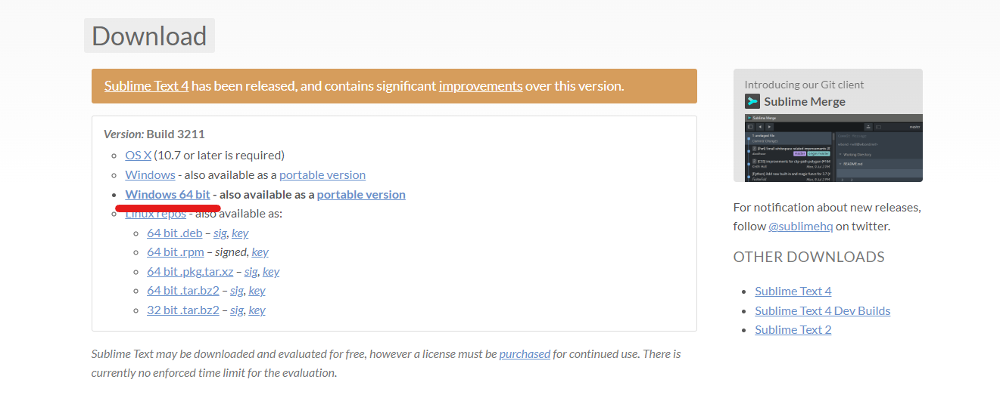
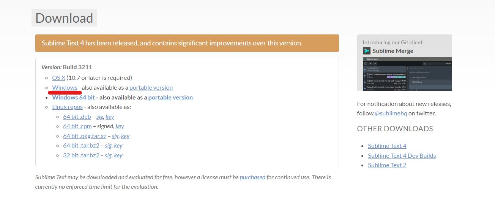

Установка Sublime Text 3
Для удобного пользования языком Python существует несколько видов текстовых редакторов, таких как: Brackets, Visual Studio Code, PyCharm, Atom и т.д. В этой главе вашему вниманию будет представлена установка текстового редактора Sumlime Text 3.
Чтобы установить Sublime Text 3, переходим на официальный сайт.
И выбираем вот эту строчку.

Если же у вас Windows 32 бита, то выбираем строчку выше

Нажимаем Next и Install

Затем Finish